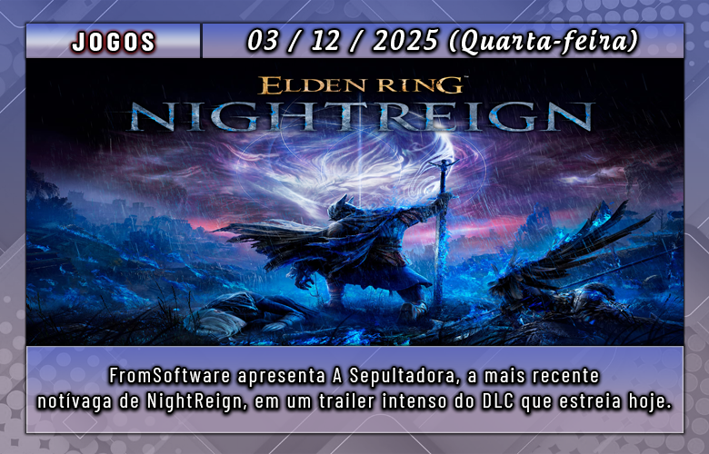
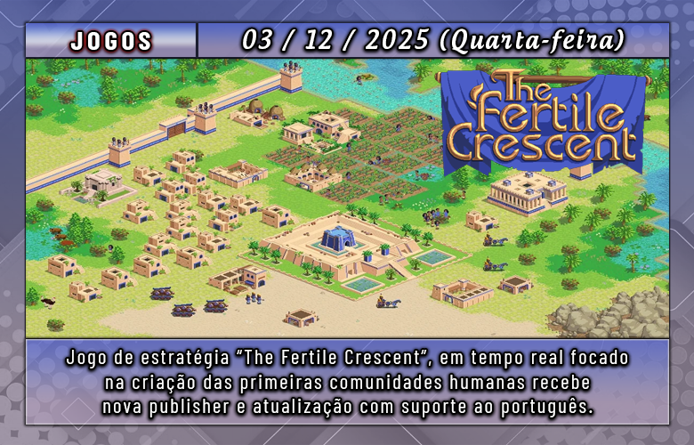
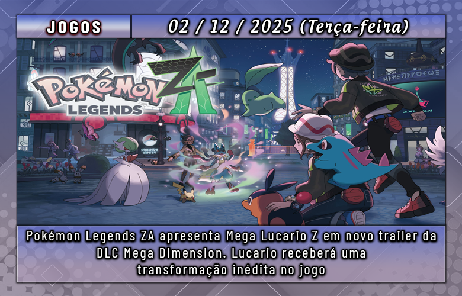
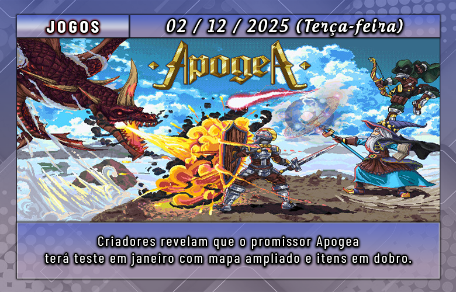
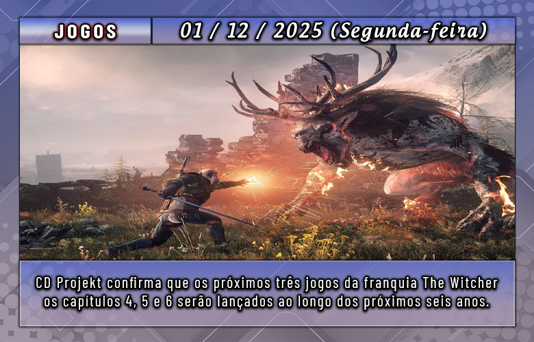
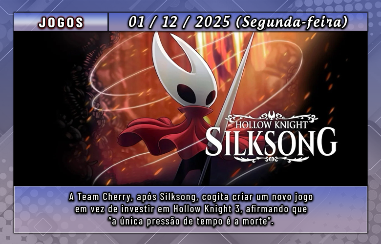

Um programa de televisão japonês revelou mais da gameplay de Resident Evil 9: Requiem, novo game da franquia de terror da Capcom. Veja a seguir.
There was some new Resident Evil Requiem gameplay of a new area with Grace fighting a zombie in the Resident Evil special program that aired on Japanese television.
pic.twitter.com/FToPeqi4HW
Tudo sobre Resident Evil 9: Requiem
Nos últimos dias, o produtor Masato Kumazawa revelou que o novo jogo contará com o retorno de personagens conhecidos pelos fãs da franquia. “Eu diria que sim, alguns rostos das séries anteriores vão aparecer, mas não criem expectativas exageradas”, comentou Kumazawa (via EuroGamer). “Não podemos garantir muito, mas posso confirmar que haverá personagens ligados ao incidente de Raccoon City.”
Resident Evil 9: Requiem representa a nova etapa da franquia de terror da Capcom. O game levará os jogadores de volta a Raccoon City, cenário clássico de Resident Evil 2 e 3, revisitando a cidade após sua destruição por uma bomba nuclear — medida tomada para tentar conter o surto de zumbis provocado pelo T-Virus e outros agentes biológicos.
A protagonista desta vez será Grace Ashcroft, filha de Alyssa Ashcroft, uma das personagens principais de Resident Evil: Outbreak. Grace retorna ao hotel Wrenwood para investigar uma série de mortes misteriosas no local onde sua mãe foi assassinada oito anos atrás.
Requiem foi anunciado oficialmente em julho de 2024 no evento Capcom NEXT. O lançamento está marcado para 27 de fevereiro de 2026, com versões confirmadas para PlayStation 5, Xbox Series X|S e PC.

A FromSoftware revelou a segunda notívaga jogável de Elden Ring NightReign: The Forsaken Hollows, expansão que será lançada amanhã, 4 de dezembro, para PC e consoles. Chamada A Sepultadora, a nova guerreira canaliza sua fé em pura força física. O trailer recém-publicado destaca sua atuação brutal em Limveld, reforçando o tom que o estúdio quer transmitir com o DLC. Vamos aos detalhes?
No vídeo, A Sepultadora surge derrotando adversários com golpes pesados e habilidades que refletem sua missão de eliminar a escuridão que se espalha pelo mundo. Essa é a segunda notívaga confirmada na expansão, fortalecendo a promessa de variedade de estilos de combate e oferecendo novas estratégias para quem busca experimentar formas diferentes de enfrentar os desafios de NightReign. Com uma estética sombria e ofensiva, tudo indica que ela terá um papel importante nos conflitos centrais do novo conteúdo.
Confira o vídeo de apresentação da personagem:
Além dos novos personagens jogáveis, The Forsaken Hollows traz dois chefes do chamado “terceiro dia”, novos chefes de campo, um sistema de terreno mutável — que altera de forma significativa a configuração do mapa — e mais áreas para explorar em Limveld. A expansão aprofunda o enigma por trás da Noite, e a desenvolvedora reforça que desvendar sua origem será crucial para avançar pela região inédita. Quem possui as versões Deluxe ou Collector’s terá acesso automático ao DLC no lançamento; os demais poderão comprá-lo separadamente.

A MicroProse revelou que TFC: The Fertile Crescent, um RTS ambientado na Idade do Bronze e inspirado nas civilizações do antigo Oriente Próximo, agora faz parte oficialmente de seu catálogo de publicações. Para marcar a novidade, o título recebeu a Atualização 1.3, uma das maiores já disponibilizadas, trazendo inclusive novidades direcionadas ao público brasileiro.
O novo patch chega com um extenso pacote de traduções preparadas com apoio de linguistas profissionais — um trabalho complexo, já que o jogo não havia sido projetado originalmente para receber localização. A partir de agora, o RTS pode ser jogado em alemão, francês, norueguês, italiano, polonês, português do Brasil, russo, chinês simplificado e espanhol. O update também garantiu ao jogo o selo Steam Deck Verified, graças à implementação completa do teclado virtual automático, além de oferecer ajustes de balanceamento, melhorias diversas e correções específicas.
Confira o trailer de anuncio:
Desenvolvido pela Wield Interactive e lançado em 2024, o título mescla elementos clássicos dos jogos de estratégia em tempo real com sistemas historicamente inspirados, aprofundada administração de recursos e mecânicas táticas que tornam cada escolha mais impactante. Entre seus conteúdos, estão uma campanha com 10 fases, modos Skirmish, Hordes e Sandbox, multiplayer para até quatro pessoas e uma economia diferenciada baseada em Fertilidade e Comida. Um novo trailer também foi divulgado, destacando a evolução constante do projeto.
A Netflix finalmente adicionou Red Dead Redemption ao seu catálogo de jogos. Confira abaixo o novo trailer do título, que teve sua estreia original no PlayStation 2.
Aqui está o texto reescrito com outras palavras:
O jogo já pode ser acessado pelo aplicativo da Netflix tanto em dispositivos iOS quanto Android. Além disso, o título foi relançado recentemente para PS5 e Xbox Series, oferecendo gameplay a 60 fps, resolução que pode chegar a 4K e suporte a HDR. No Nintendo Switch 2, a taxa de 60 quadros por segundo também está presente, embora a resolução não tenha sido detalhada.
A Rockstar informou que quem já possui as edições de PS4, Switch 1 ou Xbox One poderá fazer a atualização gratuitamente. Nos consoles da Sony e da Nintendo, será possível até preservar o progresso já salvo.
Para quem joga no celular, Red Dead Redemption entrou no catálogo de games da Netflix. Assim como ocorreu com diversos títulos da série GTA, o clássico de Velho Oeste passa a integrar a biblioteca de jogos oferecida pelo serviço, sem custo adicional para assinantes.
Lançado originalmente em 2010 para PlayStation 3 e Xbox 360, Red Dead Redemption se tornou um fenômeno e consolidou ainda mais o prestígio da Rockstar no mercado. Sua continuação, lançada em 2018, elevou o padrão com uma experiência imersiva sem igual.

Mega Lucario Z é a mais recente Megaevolução anunciada para Pokémon Legends: Z-A, apresentada em um novo trailer da DLC Mega Dimension, que será lançada em 10 de dezembro.
Confira o vídeo do trailer de revelação:
O vídeo destaca várias características da nova forma do Lucario, incluindo uma postura mais inspirada em artes marciais orientais. A criatura também utiliza novos golpes e até executa a conhecida “corrida do Naruto”.
Embora Lucario já tivesse uma Megaevolução, sua enorme popularidade acabou rendendo mais uma forma especial. Além dele, Zeraora e Raichu também receberão Megaevoluções na expansão.
Pokémon Legends: Z-A está disponível para Nintendo Switch 1 e 2, e a DLC Mega Dimension chega em 10 de dezembro para ambas as plataformas.

Recentemente, os desenvolvedores de Apogea informaram no Discord que a próxima fase de testes começará em 17 de janeiro. De acordo com a equipe, o intervalo mais longo do que o previsto acabou sendo necessário, já que o tempo adicional foi crucial para refinar e assegurar a qualidade da grande quantidade de novos conteúdos implementados.
A equipe afirma que esta nova etapa praticamente dobra o total de itens e expande significativamente o tamanho do mapa, além de introduzir novas mecânicas e traits. O avanço considerável foi possível graças ao bom desempenho do playtest anterior, que motivou o time a preparar uma versão quase final para o futuro lançamento oficial. A expectativa é que este seja o último teste antes da estreia. Algumas semanas antes da data, o estúdio divulgará orientações para que apoiadores do Patreon possam acessar servidores exclusivos no primeiro dia — válido para quem contribuiu entre junho e janeiro.
Inspirado em grandes clássicos do gênero, Apogea promete uma experiência completa, com diversas classes, sistemas de progressão mais elaborados e um vasto mundo medieval para explorar, tudo sem qualquer tipo de Pay-to-Win — garantindo que a evolução dependa apenas da habilidade e dedicação dos jogadores. Para saber mais sobre o jogo, basta visitar o site oficial.
A Ubisoft lançou hoje Assassin’s Creed Shadows no Nintendo Switch 2, expandindo o alcance da jornada de Naoe e Yasuke pelo Japão feudal. A versão foi ajustada especialmente para o novo console, priorizando estabilidade e mobilidade durante a jogatina.
No Switch 2, o título recebeu melhorias técnicas dedicadas, garantindo boa qualidade visual e fluidez. A edição inclui ainda controles por toque, possibilidade de jogar offline após o download, suporte a 30 fps tanto no modo portátil quanto no dock, além de mídia física em cartão acompanhada de uma chave digital.
Os jogadores também podem acessar todo o conteúdo pós-lançamento sem custo, como a missão Attack on Titan, disponível até 22 de dezembro. A Ubisoft confirmou ainda que a expansão Claws of Awaji será lançada no console no início de 2026.
O game conta com progressão cruzada via Ubisoft Connect, permitindo continuar a campanha em outras plataformas. Todos os itens da loja interna também são compartilhados automaticamente entre aparelhos vinculados à mesma conta.
Assassin’s Creed Shadows é um RPG de ação em mundo aberto desenvolvido pela Ubisoft Quebec e lançado em 20 de março de 2025. Integrante da franquia Assassin’s Creed, o jogo aposta em liberdade de exploração e mecânicas de combate variadas.
O título está disponível para PS5, Xbox Series X|S, Windows, Nintendo Switch 2, GeForce Now, Amazon Luna e Mac, e recebeu indicação ao The Game Award for Innovation in Accessibility.

The Witcher IV está em desenvolvimento total há alguns meses. Embora ainda esteja longe de chegar ao público, já é certo que a CD Projekt RED pretende iniciar uma nova trilogia da série.
O estúdio reafirmou seu objetivo: lançar os três próximos games — The Witcher IV, V e VI — dentro de um período de seis anos.
Michał Nowakowski, co-CEO da empresa, comentou que The Witcher V e VI devem levar menos tempo para serem produzidos, graças ao aprendizado adquirido no desenvolvimento do quarto jogo.
Ele destacou, durante uma conferência da CD Projekt Group, que a equipe está bastante satisfeita com os avanços apresentados na tech demo exibida na Unreal Fest, além da evolução da Unreal Engine feita em parceria com a Epic Games. Segundo ele, o time tem aprendido muito sobre como adaptar a engine para construir um grande mundo aberto, como é o caso de The Witcher IV.
Nowakowski reforçou que, por isso, os próximos títulos tendem a ter ciclos mais curtos: “Nossa meta continua sendo lançar toda a trilogia em seis anos, o que naturalmente exige intervalos menores entre o desenvolvimento de cada jogo.”
The Witcher IV está sendo desenvolvido na Unreal Engine 5 e, por enquanto, não possui previsão de lançamento.

A Team Cherry comentou que pode partir para a criação de um jogo completamente novo depois de lançar o DLC de Silksong — que ainda não tem data definida. Porém, os desenvolvedores admitiram que a única verdadeira pressa que sentem é a “morte”.
Os cofundadores Ari Gibson e William Pellen levaram sete anos para desenvolver Silksong, aguardada continuação de Hollow Knight. Em entrevista a Jason Schreier, da Bloomberg, a dupla confirmou o DLC, mas também revelou que ainda não decidiu se o próximo passo será Hollow Knight 3 ou uma nova franquia. Segundo eles, o tempo que ainda têm para criar jogos pesa nessa decisão.
Gibson comentou:
“Temos outros projetos que queremos fazer. A única pressão sobre o tempo — e já falamos disso antes — é a morte. Se cada jogo leva sete anos, ou até mais, não temos tantas oportunidades assim. Seria ótimo conseguir desenvolver mais alguns enquanto ainda há tempo, a menos que algo inesperado aconteça.”
É uma perspectiva dura, mas que tem sido compartilhada por outros grandes nomes da indústria. Em 2023, pouco antes do lançamento de Starfield, Todd Howard afirmou que The Elder Scrolls 6 pode ser o último da série que ele dirige, justamente por causa do longo tempo que cada projeto leva.
Ele explicou:
“Quando penso em Elder Scrolls 6, faço as contas e percebo que não estou ficando mais jovem. Talvez esse seja o último da franquia que eu consiga fazer.”
Em maio, Hideo Kojima, criador de Metal Gear, também falou sobre como a pandemia o fez refletir sobre sua própria mortalidade. Aos 62 anos, ele disse que ficou gravemente doente e, pela primeira vez, se questionou sobre quanto tempo ainda teria para criar jogos ou até filmes. Chegou até a deixar ideias registradas em um pen drive, entregue ao seu assistente como um tipo de “testamento criativo”, caso algo acontecesse.
No caso da Team Cherry, Gibson e Pellen afirmam que, seja qual for o próximo projeto — um novo título ou Hollow Knight 3 —, ele seguirá a essência dos jogos que o estúdio já desenvolveu até agora.
Já disponível para PC e PlayStation 5 desde 14 de novembro, Where Winds Meet, o RPG de ação em mundo aberto e gratuito desenvolvido pela Everstone Studio, será lançado oficialmente para Android e iOS no dia 12 de dezembro, com suporte a cross-play e progressão compartilhada entre todas as plataformas.
Para quem quiser se antecipar, as versões mobile já contam com pré-registro aberto na Google Play e na App Store. Ao se cadastrar, o jogador garante avisos no dia do lançamento e ainda recebe recompensas gratuitas que facilitam o início da jornada.
Caso ainda não conheça o jogo, confira o trailer abaixo:
Ambientado na China do século X, durante a era das Cinco Dinastias e Dez Reinos, o jogo combina política, guerra e elementos clássicos de Wuxia. O jogador controla um jovem espadachim em busca de respostas sobre seu passado, explorando um mundo aberto vivo, repleto de cidades movimentadas, florestas densas e ruínas antigas que reagem ao clima, ao tempo e às escolhas feitas ao longo da aventura.
A Masangsoft revelou que GunZ: The Duel terá seu segundo playtest global entre 11 e 14 de dezembro, disponível pela Steam. Para quem não conhece, esta é uma nova edição do clássico shooter que, no Brasil, chegou a ser publicado pela Level Up!, mas teve seus servidores encerrados anos depois.
O novo teste contará com diversas melhorias, incluindo ajustes técnicos como tick rate aprimorado, controle de FOV, configuração de anti-lead de 0 a 100 e rede mais estável. O sistema de combate e a interface também foram atualizados: haverá novos efeitos sonoros e visuais para multi-kills, contorno opcional para inimigos, barra de HP com cores renovadas, além da remoção do lock de câmera durante o wall run.
Na parte de qualidade de vida, o playtest trará regras mais flexíveis para iniciar partidas (não será mais necessário que todos estejam prontos), detecção de AFK mais eficiente, e melhorias na interface de chat e da loja. Uma série de bugs também foi corrigida, incluindo falhas no indicador de HP/AP, problemas no placar e erros de clipping em mapas.
Quem quiser participar poderá solicitar acesso diretamente na página do jogo na Steam, já é possível solicitar o acesso.